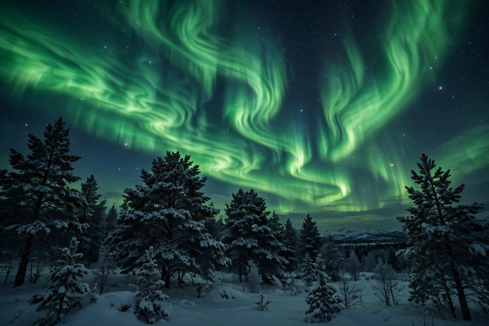

Aurora
An aurora (pl. aurorae or auroras), also known as the northern lights (aurora borealis) or southern lights (aurora australis), is a natural light display in Earth's sky, seen predominantly in high-latitude regions around the Arctic and Antarctic. Auroras display dynamic patterns of brilliant lights that appear as curtains, rays, spirals, or dynamic flickers covering the entire sky.

Cause
Auroras result from disturbances in the magnetosphere caused by the solar wind. Charged particles, mainly electrons and protons, are channelled by Earth's magnetic field toward the poles, where they collide with atoms and molecules of oxygen and nitrogen in the upper atmosphere, typically 100 to 300 kilometres above the surface. The collisions excite the atmospheric gases, which emit light as they return to their ground state. Green — the most common colour — comes from oxygen at lower altitudes; red tops arise from oxygen higher up, while nitrogen produces blue and purple edges. Major disturbances such as coronal mass ejections can intensify auroras and extend them to middle latitudes, as famously occurred during the Carrington Event of 1859.
Forms and occurrence
Displays range from a quiet arc low on the horizon to a corona of rays converging overhead during substorms. Auroras occur in ovals centred on the magnetic poles, so the best viewing is under dark skies in places such as Alaska, northern Canada, Iceland, Norway, Sweden, Finland, and Siberia for the northern lights, and southern New Zealand, Tasmania and the Antarctic coast for the southern lights. Auroral activity follows the roughly 11-year solar cycle and peaks around the equinoxes.
In history and culture
Auroras have inspired mythologies worldwide: Norse traditions linked them to the gods and the Valkyries, some Inuit groups saw the spirits of the dead, and Finnish folklore tells of an arctic fox sweeping snow into the sky with its tail. Galileo Galilei coined the name "aurora borealis" in 1619, after the Roman goddess of dawn and the Greek god of the north wind. Auroral-like emissions have also been observed on other planets with magnetic fields, including Jupiter and Saturn.
See also: Solar wind · Magnetosphere · Geomagnetic storm · Carrington Event